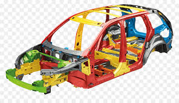
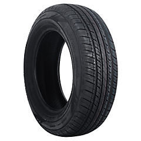
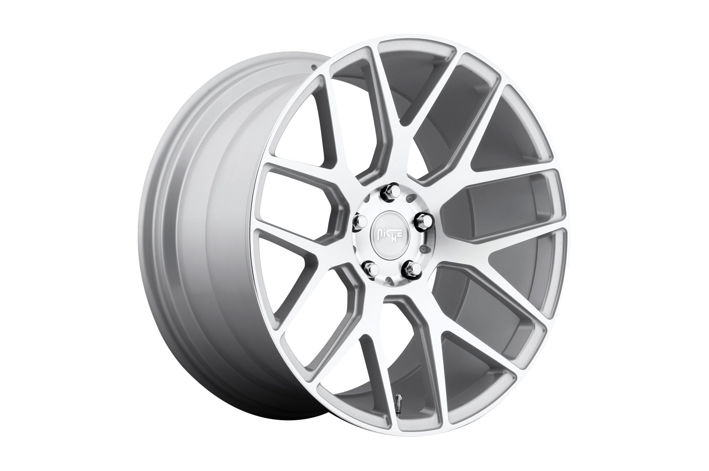
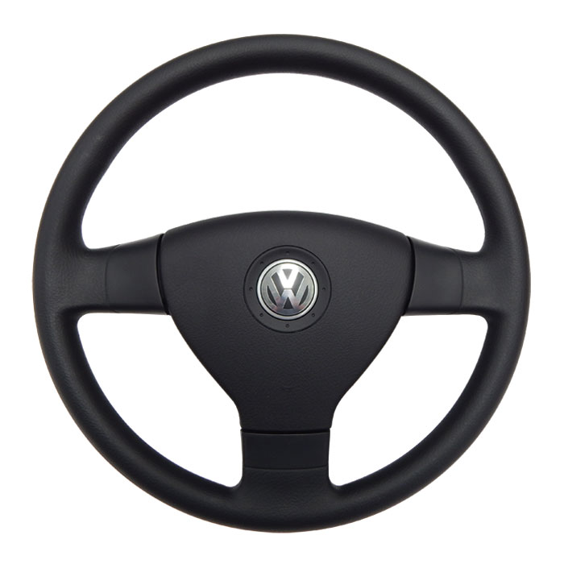
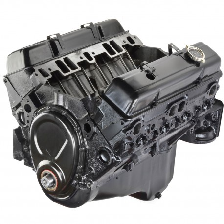
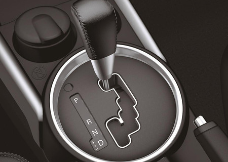
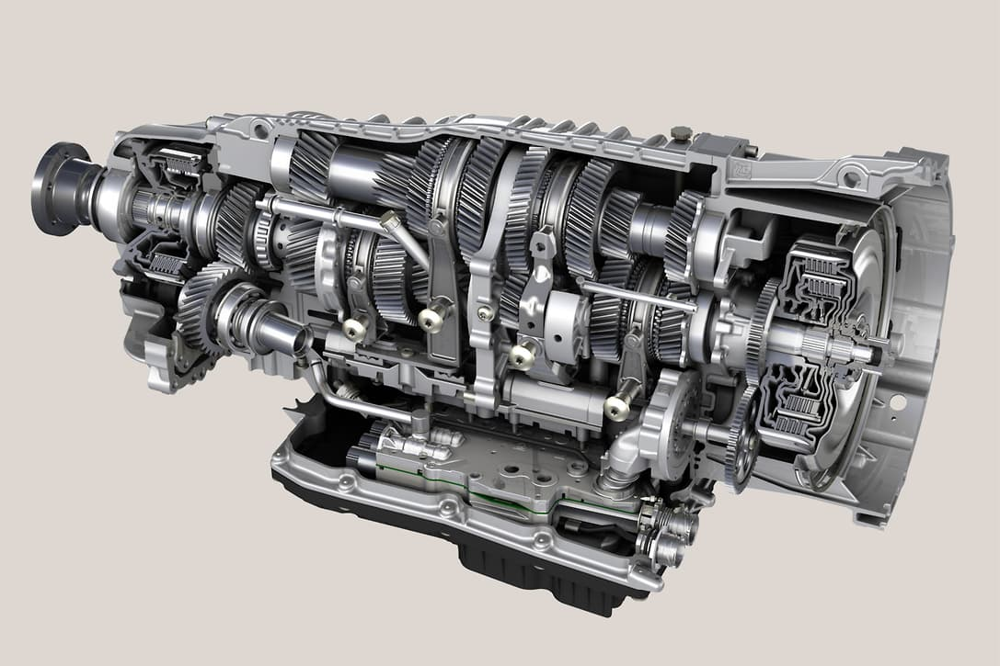
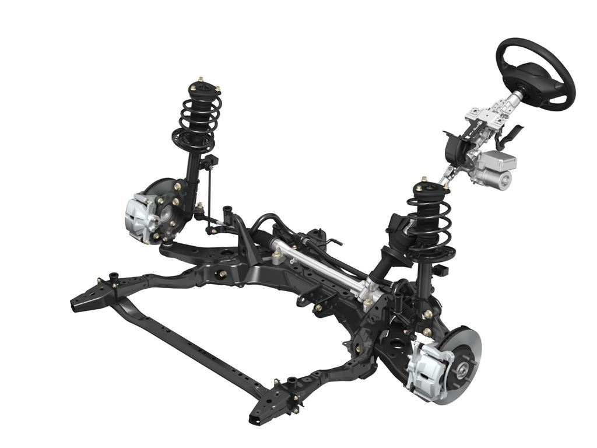
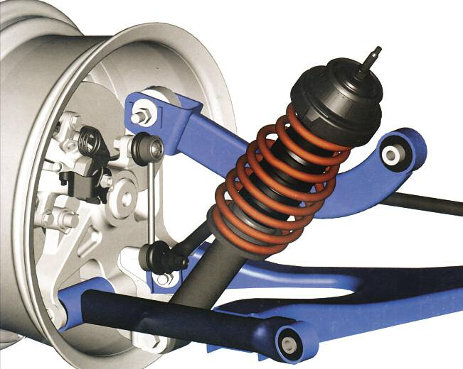

Autoteilen
Die verschiedenen Autoteilen sind:Struktur (Karosserie, Fahrgestell, Rahmen), Pneumatisch, Rim, Lenkrad, Motor (Antriebsgruppe: Motor, Kupplung, Getriebe), Schalthebel, Getriebe, Bremsen, Adresse und die, Aussetzung
Struktur
Die Karosserie, Messing oder Chapería eines Autos ist der Teil des Fahrzeugs, in dem Passagiere oder Fracht ruhen. In selbsttragenden Fahrzeugen hält die Karosserie auch die mechanischen Elemente des Fahrzeugs.
Das Chassis oder Chassis, das nicht mit der Karosserie verwechselt werden darf, besteht aus einer internen Struktur, die die verschiedenen Fahrzeuge trägt und bei der Konstruktion und Verwendung eines Fahrzeugs oder Objekts Steifigkeit und Formgebung gewährleistet. Es ist analog zum Skelett eines Tieres. Im Falle eines Fahrzeugs besteht es aus einem Rahmen, der ineinander integriert ist und sowohl die mechanischen Komponenten wie das Motoraggregat als auch die Radaufhängung, den Motor einschließlich der Karosserie, enthält. Sie haben überhaupt nichts mit der Karosserie zu tun Plattform
Das Chassis oder Chassis, das nicht mit der Karosserie verwechselt werden darf, besteht aus einer internen Struktur, die die verschiedenen Fahrzeuge trägt und bei der Konstruktion und Verwendung eines Fahrzeugs oder Objekts Steifigkeit und Formgebung gewährleistet. Es ist analog zum Skelett eines Tieres. Im Falle eines Fahrzeugs besteht es aus einem Rahmen, der ineinander integriert ist und sowohl die mechanischen Komponenten wie das Motoraggregat als auch die Radaufhängung, den Motor einschließlich der Karosserie, enthält. Sie haben überhaupt nichts mit der Karosserie zu tun Plattform
Ein Rahmen oder ein Rahmen ist eine Struktur aus Längsträgern (Längsträger) und Querträgern (Querträger), an denen auf die eine oder andere Weise alle Elemente und mechanischen Gruppen befestigt werden müssen, aus denen ein Fahrzeug besteht, z. B. Motor, Getriebegruppen , Körperwellen usw. Die Verwendung des Rahmens ist nur für Geländefahrzeuge, Lastkraftwagen, große Lieferwagen und einige leichte Lastkraftwagen beschränkt. Es ist wichtig zu betonen, dass der Rahmen (Chassis) völlig unabhängig von der Karosserie ist, eine hohe Steifigkeit bietet und große Anstrengungen unterstützt, ohne die Ausrichtung während des Marsches aufgrund der Unebenheiten der Straße zu beeinflussen.
Pneumatisch
Ein Reifen (aus dem Griechischen πνευματικός, "relativ zur Lunge", durch die Luft, die er trägt), eine Hülle, ein Reifen, Gummi oder Gummi, ist ein ringförmiges Stück Gummi, das auf die Räder verschiedener Fahrzeuge und Maschinen aufgebracht wird. Seine Hauptfunktion besteht darin, einen angemessenen Kontakt durch Haftung und Reibung mit dem Belag zu ermöglichen, wodurch Anfahren, Bremsen und Führen ermöglicht werden. Der Teil aus weichem Gummi, der aufgepumpt und mit Luft gefüllt ist, ist die Kammer (ein Ringrohr, das aufgepumpt wird und zwischen Reifen und Felge verläuft, ist eine Luftkammer).
Rim
Die Felge (der französischen Jante), das Rim (der englischen Felge) oder der Reifen ist ein Teil des Rades der meisten Landfahrzeuge, ein Metallteil, dessen Form sich in Bezug auf den Typ und die Größe des Fahrzeugs ändert, und dessen Funktion es ist, das Rad zu halten Reifen, um die Form beim Rollen zu halten.
Lenkrad
Ein Lenkrad (auch als Lenkrad oder Ruder bezeichnet) ist eine Art Lenksteuerung in Fahrzeugen. Die Flyer werden in allen Fahrzeugtypen eingesetzt, vom Pkw bis zum leichten und schweren Lkw. Das Lenkrad ist der Teil des Regierungssystems, der vom Fahrer manipuliert wird und Aktionen generiert, die vom Rest des Systems beantwortet werden.
Motor
Ein Motor ist der systematische Teil einer Maschine, die in der Lage ist, das System zu betreiben und irgendeine Art von Energie (Elektrizität, fossile Brennstoffe usw.) in mechanische Energie umzuwandeln, die eine Aufgabe erfüllen kann. In Autos ist dieser Effekt eine Kraft, die Bewegung erzeugt.
Schalthebel
Die Schaltung eines Kraftfahrzeugs ist ein Element, mit dem die entsprechenden Übersetzungsverhältnisse des Getriebes eines Fahrzeugs, beispielsweise eines Autos, mit einem Schaltgetriebe oder mehreren gängigen Arten von Automatikgetrieben aktiviert oder deaktiviert werden. Das Gerät wird zum Schalten in einem Schaltgetriebefahrzeug verwendet. Diese Aktion wird normalerweise ausgeführt, während das Kupplungspedal mit dem linken Fuß gedrückt wird, um den Getriebemotor und die Räder freizugeben.
Getriebe
In Fahrzeugen ist das Getriebe oder Getriebe (auch einfach Getriebe genannt) das Element, das für die Erfassung des Drehmoments an den Rädern verantwortlich ist, das ausreicht, um das Fahrzeug aus dem Stand zu starten, und das in Bewegung ist, um ein ausreichendes Drehmoment zu erzielen in ihnen die Widerstände gegen den Vormarsch zu überwinden, im Grunde diejenigen, die sich aus dem aerodynamischen Profil, der Reibung mit dem Abrollen und der Steigung im Aufstieg ergeben.
Bremsen
Eine Bremse ist ein Gerät, mit dem die Geschwindigkeit eines Fahrzeugs, normalerweise einer Achse, einer Antriebswelle oder einer Trommel, gestoppt oder verlangsamt wird. Die Bremsen sind Energietransformatoren und können daher als Maschine an sich verstanden werden, da sie die kinetische Energie eines Körpers in Wärme oder Arbeit umwandeln und in diesem Sinne als „Energieextraktoren“ visualisiert werden können. Obwohl die Bremsen auch Maschinen sind, sind sie in der Konstruktionsliteratur allgemein als Maschinenelement und in regelungstheoretischen Literaturen als Aktuatoren zu finden.

Adresse
Die Adresse ist der Satz von Organen, mit denen jedes Fahrzeug seine Flugbahn variieren kann, um dem gewünschten Kurs zu folgen. Zu diesem Zweck verwenden Lenksysteme im Allgemeinen die Räder des Fahrzeugs, indem sie entweder die Ausrichtung (wie bei einem Auto) ändern, den Umfang des Fahrzeugs verkleinern (wie bei einem Motorrad, wenn es sich an die Schulter des Reifens lehnt), oder durch Differenzialdrehung (wie bei Rollstühlen oder Raupenfahrzeugen, bei denen die Richtungsänderung durch die unterschiedliche Drehzahl der Räder auf beiden Seiten bewirkt wird). Eine Ausnahme bildet die Eisenbahn, bei der die Richtung über Schienen und Umleitungen gesteuert wird. Die Hauptfunktion eines Lenksystems besteht darin, dem Fahrer das Führen des Fahrzeugs zu ermöglichen.
Aussetzung
Der Begriff Aufhängung bezieht sich auf den Satz von Komponenten, die die Räder mit dem Fahrgestell eines Fahrzeugs verbinden und eine Relativbewegung zwischen ihnen ermöglichen. Die Aufhängung besteht aus einem System von Metallfedern (oder seltener aus Gummi, pneumatisch oder magnetisch), die die Unebenheiten der Straße zum Körper isolieren und deren Schwingungen mit Hilfe von im Allgemeinen hydraulischen Stoßdämpfern gestoppt werden, in die die kinetische Energie umgewandelt wird kalorisch Darüber hinaus verfügt es über eine Reihe von Strukturelementen, die für den Antrieb von Federn und Dämpfern verantwortlich sind und die Räder auf ihrem Weg führen. Dieser Satz von Elementen kann auf sehr unterschiedliche Weise entworfen werden, was zu unterschiedlichen Aufhängungssystemen führt.
